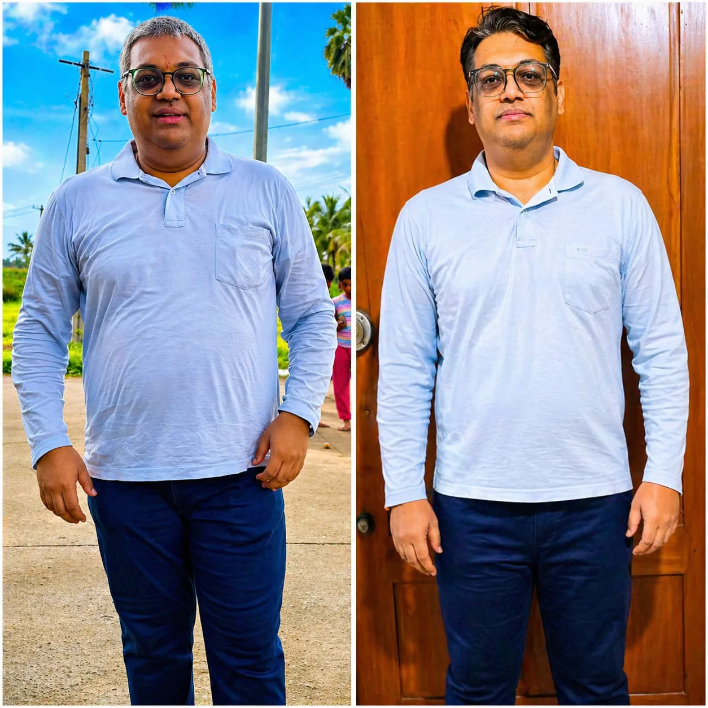
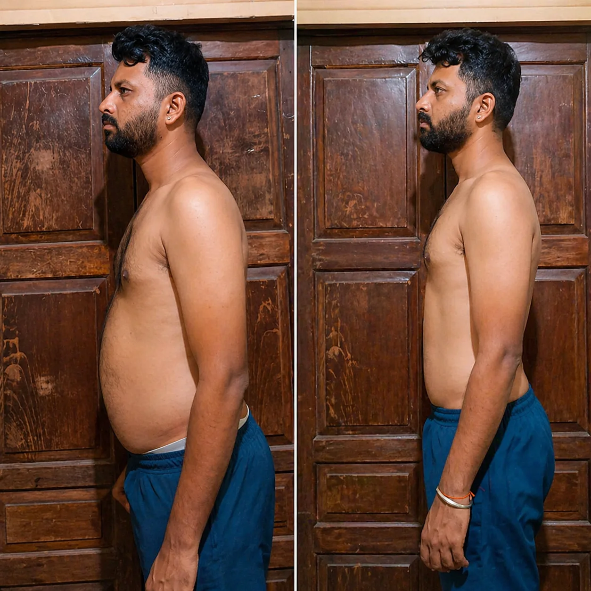
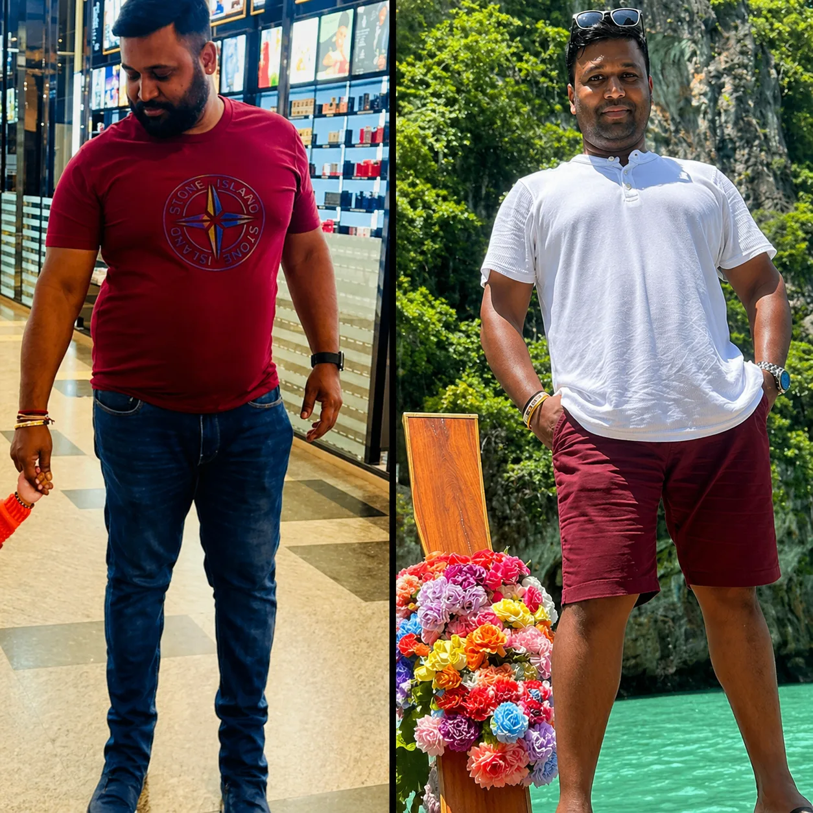
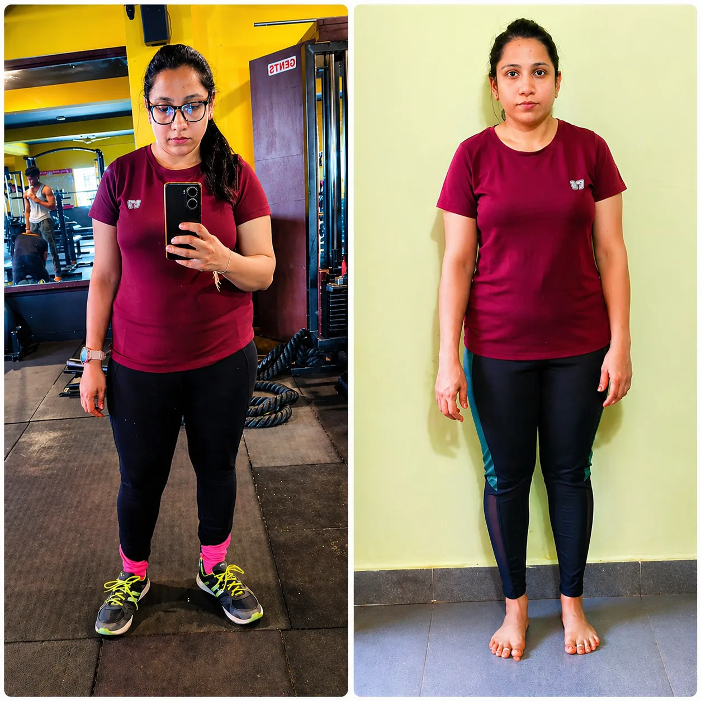
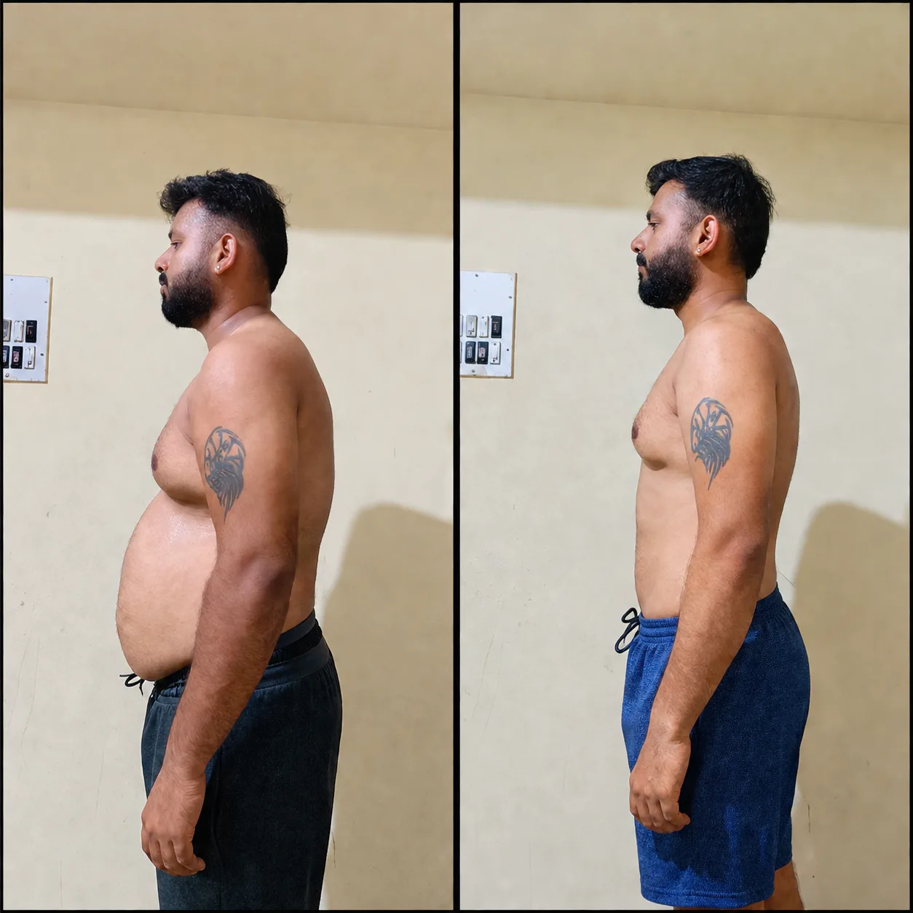
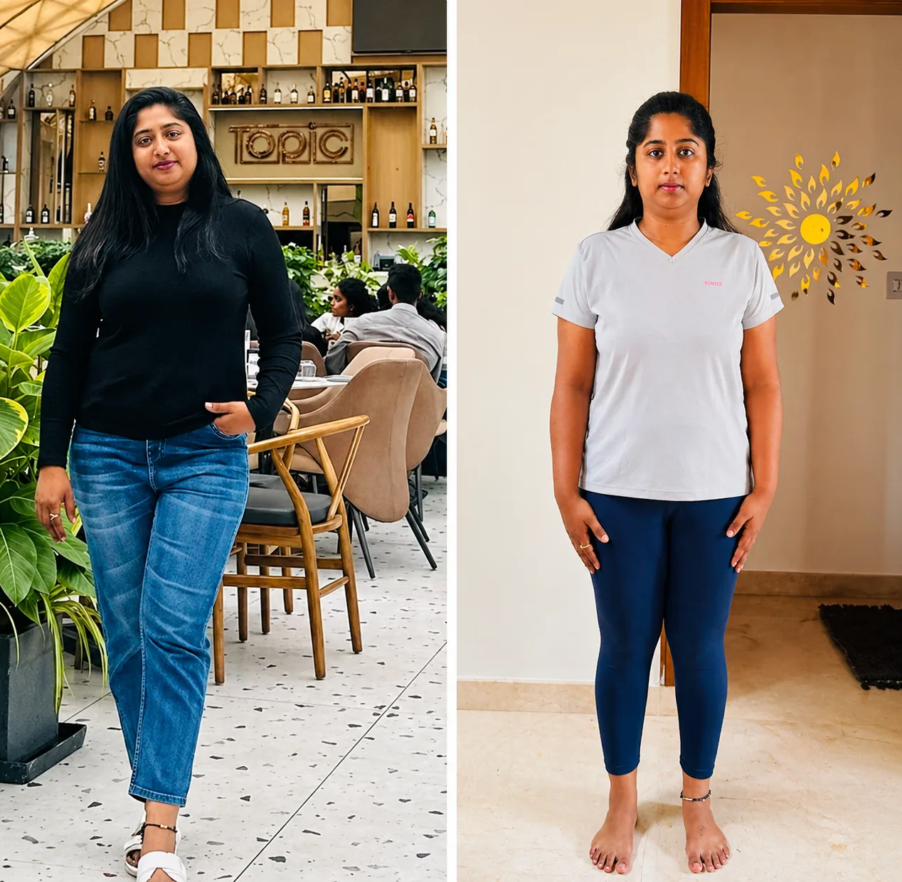
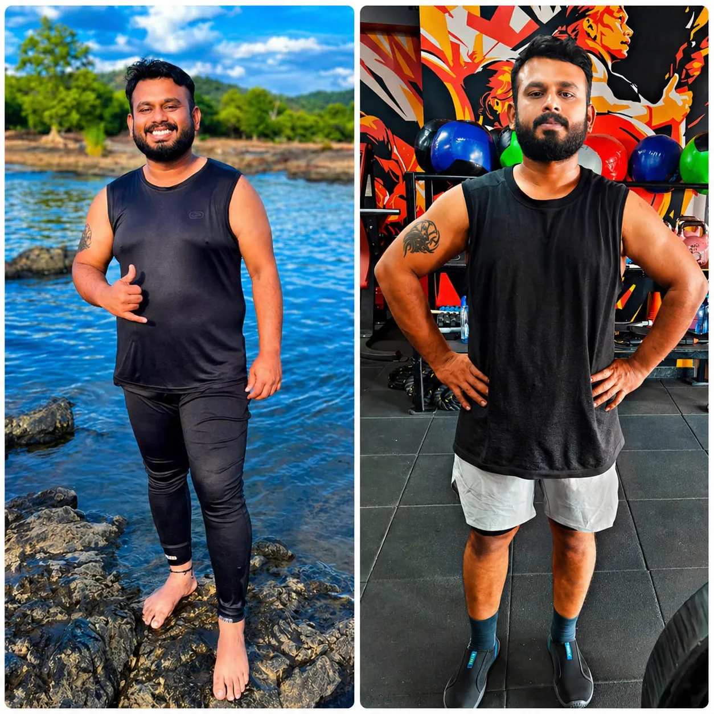

WHAT 12 WEEKS
LOOKS LIKE WHEN THE
PLAN FITS YOUR LIFE.
Working professionals with full-time jobs, real stress, and a history of falling off programmes. Not people who made fitness their full-time focus.

When Vinayaka started, he was going through a tough phase with stress and low motivation. He had high body fat, low strength, poor endurance, and health concerns like high cholesterol and pre-diabetic signs. Progress wasn’t easy, but he stayed consistent and kept showing up. Slowly, his strength and fitness started improving along with his mindset. Today, he’s one of the most regular in the gym—often the first to arrive. Consistency changed everything for him.

Arun followed a vegetarian diet and stayed disciplined with his plan. Within one month, he managed to lose around 4 kg. During the journey, typhoid slowed him down and forced a break. Even then, he stayed focused and didn’t lose track completely. Now back on track, he’s continuing his progress with the same consistency.

Madhusudhan has a busy routine with work and family responsibilities. He may not always make it to the gym, but he stays strict with his diet. His consistency in nutrition helps him maintain his shape. He follows his plan properly without skipping. His journey shows that diet plays a major role in staying fit.

Deepa started her journey around 3 weeks ago. There were a few days off track due to a busy schedule and events. Even then, she didn’t stop completely and kept going. She is slowly building consistency and improving day by day. Her focus is on staying regular rather than being perfect.

Nitin has been on the program for about 5 weeks. In this time, he has lost around 5 kg. He is also building lean muscle alongside fat loss. His consistency with workouts and diet is clearly showing results. He is progressing steadily and moving in the right direction.

Ashwini is a corporate professional and also manages her family responsibilities. Despite a packed routine, she made time to stay consistent with her plan. In just 8 weeks, she reduced around 7 inches from her waist and 6 inches from her abdomen. Her results came from regular effort and sticking to the process without excuses. Her journey shows that even with a busy life, consistency can bring real change.

Kumar started his journey with a clear goal to lose weight and improve his fitness. He followed the plan consistently, focusing on both diet and regular workouts. Over a period of 2 months, he successfully lost around 8 kg. There were challenges along the way, but he stayed disciplined and didn’t break the routine. His progress shows that steady effort over time leads to real and sustainable results.
Average fat lost per 12-week cycle
Max training sessions most clients do per week
When most clients feel the first real shift
Percentage who extend to a second cycle
EVERY ONE OF THESE
CLIENTS WAS EXACTLY
WHERE YOU ARE NOW.
Skeptical. Busy. Had tried other things. One conversation made the difference. Let's have yours.